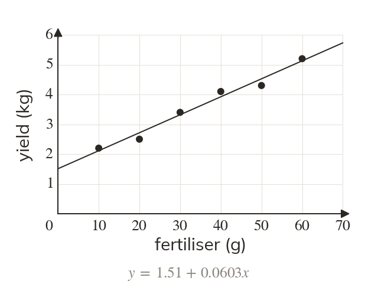
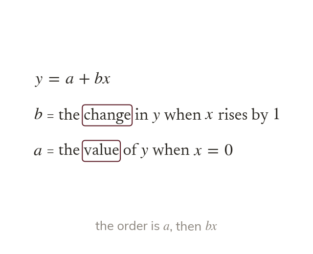
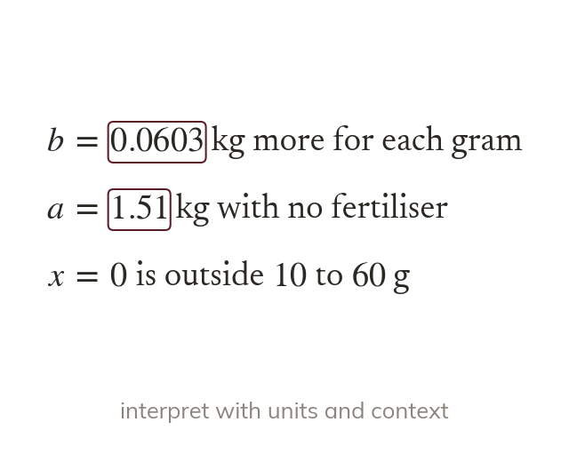
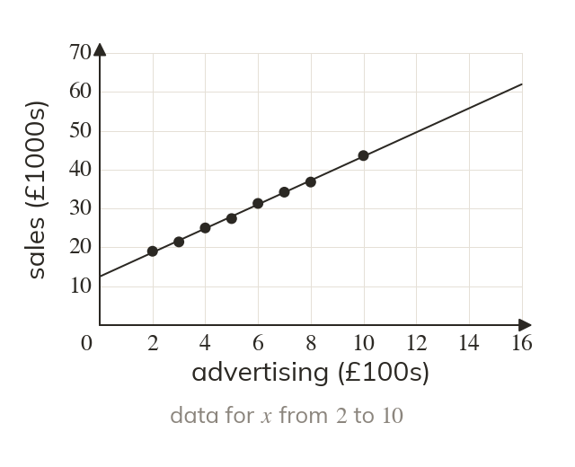
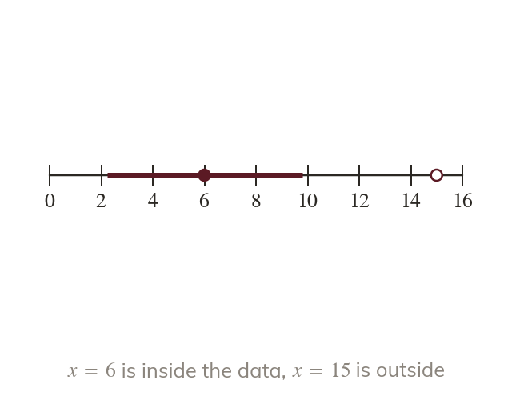
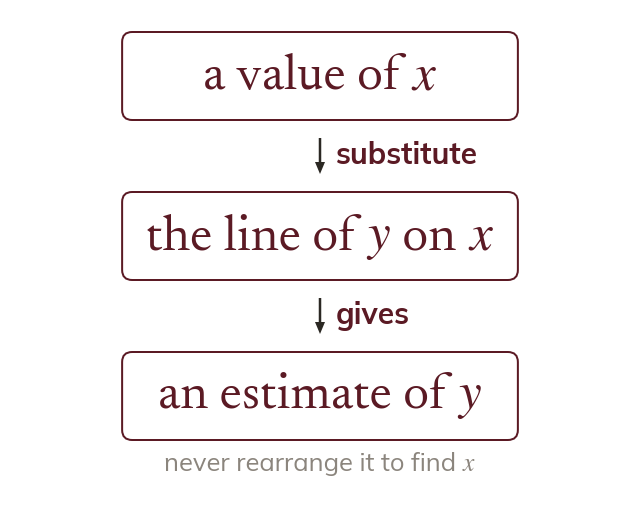

Two roles
The explanatory variable x is the one set or controlled, and goes on the horizontal axis. The response variable y is measured, and goes on the vertical axis.
A regression line turns a correlation into a model that gives estimates. Reading its coefficients in context, and knowing when its estimates can be trusted, is what the exam asks of every line it gives.
Work down the page at your own pace. Write every answer in your book first, then click to check it.
Read each card, then follow the worked examples one step at a time.

The explanatory variable x is the one set or controlled, and goes on the horizontal axis. The response variable y is measured, and goes on the vertical axis.

The regression line of on is written It is the least squares line of best fit, and a calculator or the question gives it.

In each extra gram of fertiliser adds about kg of yield. With no fertiliser the line gives kg, which is outside the data.
Pick an answer. If it's wrong, the feedback tells you which mistake it was.
Write the blanks in your book first, then tap each one to check.
Read each card, then follow the worked examples one step at a time.

Substitute a value of into the regression line to estimate For shops, advertising in £100s, and sales in £1000s, give

An estimate inside the range of the data is interpolation, and is usually reliable. An estimate outside it is extrapolation, and is unreliable.

The regression line of on estimates from a given It should not be rearranged to estimate from a given
Pick an answer. If it's wrong, the feedback tells you which mistake it was.
Write the blanks in your book first, then tap each one to check.
Finished? Next lesson: 12.S5.1 Calculating Probabilities.
For each skill, tap the one that is true for you today. Your Revise pages start with anything you mark Not yet.
Your ratings are saved on this device only.
Log in, then search for a code to practise that skill.